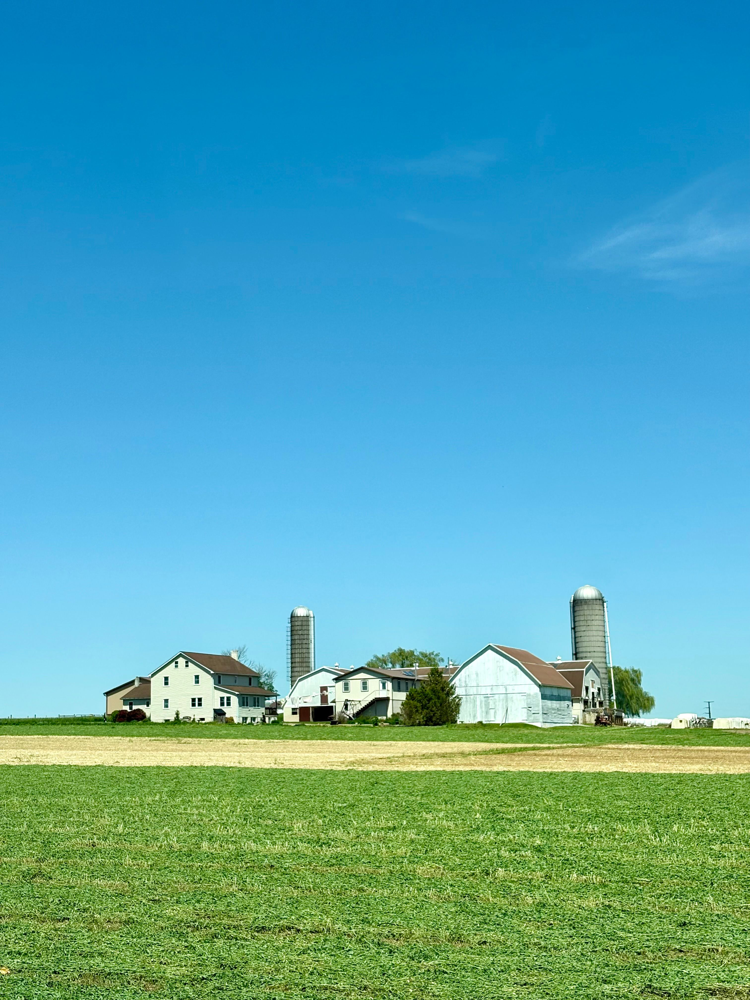
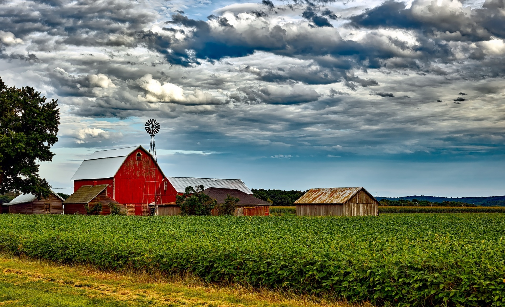
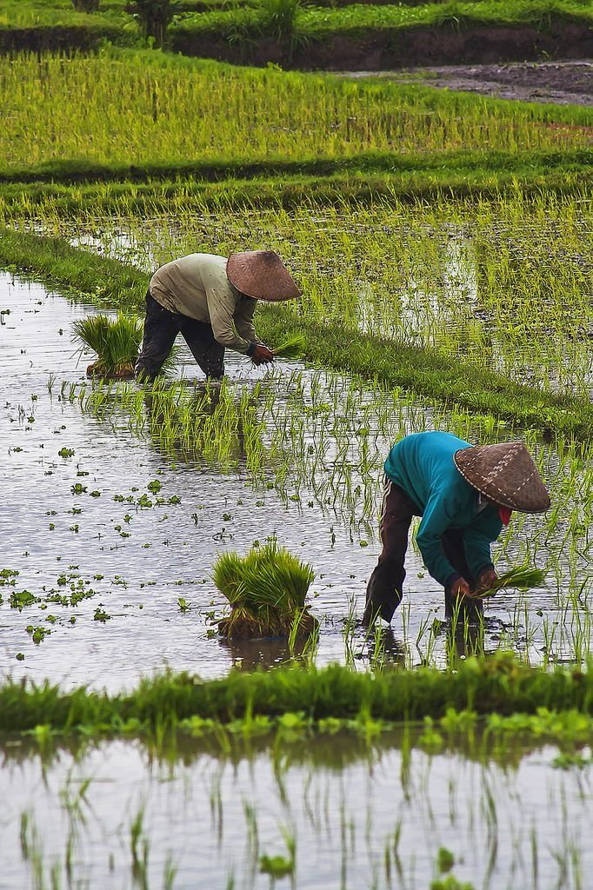

Welcome to our Farmers Field Trial Data Platform, a digital solution designed to help farmers collect, manage, and analyse important agricultural data.
Our platform provides a central place to record field trial information, monitor crop performance, and keep track of farming activities throughout the growing season.
By making data collection easier and more organised, we aim to support farmers in making informed decisions that improve productivity and farming practices.

With accurate and consistent data collection, farmers can evaluate field trial results and identify the methods that work best under different farming conditions.
The platform helps users compare crop yields, assess the effectiveness of agricultural inputs, and identify opportunities to improve resource management.
By using recorded data to guide decisions, farmers can reduce uncertainty, improve efficiency, and work towards more sustainable agricultural production.

Our platform also provides tools for data visualisation and analysis, allowing farmers to easily interpret results and share findings with stakeholders.
By presenting data in clear and meaningful ways, users can communicate insights effectively and make evidence-based recommendations for future farming practices.

Our mission is to empower farmers, agricultural researchers, and field technicians with reliable data that supports innovation and continuous improvement in agriculture.
Whether you are conducting small-scale field experiments or managing multiple agricultural trials, our platform provides a practical way to organise your findings and track progress.
Join us in using field data to grow knowledge, improve farming outcomes, and build a more productive future for agriculture.